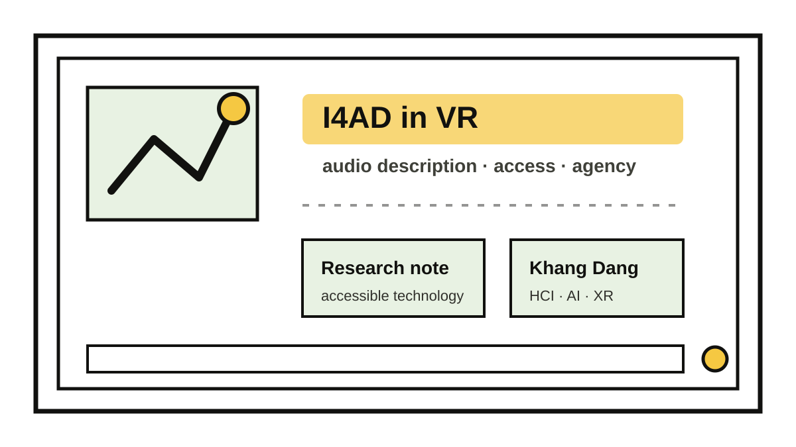

Traditional audio description often works by inserting spoken descriptions into natural pauses. That structure can be powerful in film or theater, but immersive VR changes the problem. The user can look around, performers may move across a 360° scene, and important information may not be in front of the viewer at the same time for everyone.
I4AD is my shorthand for a broader design direction: immersive, interactive, intelligent, and individualized audio description. Immersive means description should support spatial awareness, not flatten the scene. Interactive means users should be able to ask for more detail or explore based on their attention. Intelligent means systems can help generate or adapt descriptions when appropriate. Individualized means access should respect each user’s preference, context, and comfort level.
The point is not to replace human describers or impose AI on access. The point is to expand the design space so blind and low-vision audiences can experience VR musical performances with more agency, orientation, and control.